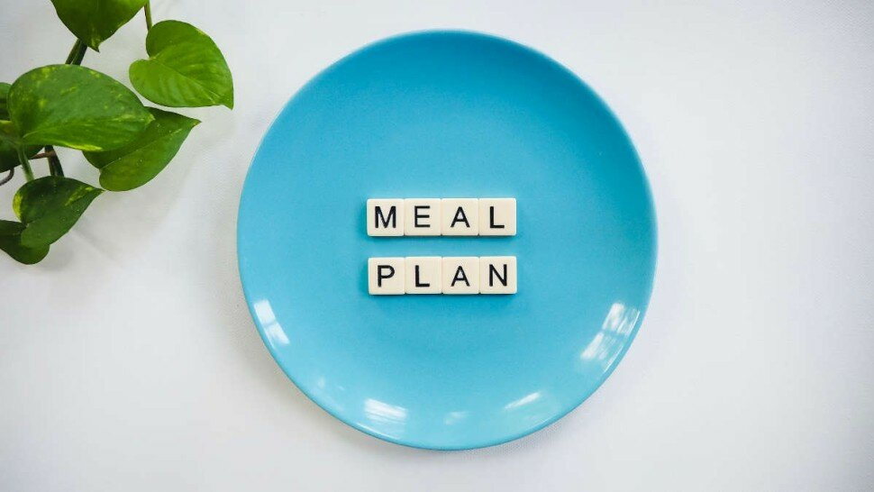

Obesity, defined as an abnormal or excessive accumulation of body fat, has become a significant global health concern in recent years [1]. With more than one-third of the adult population affected by this condition, it is crucial to address the factors contributing to this epidemic [2]. One such factor is unhealthy dietary habits, which can be improved through proper meal planning and preparation. This article aims to provide valuable insights and practical tips on "Meal Planning and Preparation for Managing Obesity," enabling individuals to make informed decisions about their nutritional choices and overall health.
Research has shown that obesity is caused by a combination of genetic, environmental, behavioral, and metabolic factors [3]. Among these, dietary habits and behaviors are modifiable risk factors that can significantly impact an individual's weight and overall health. By focusing on meal planning and preparation, individuals can take control of their nutrition, making healthier choices and managing portion sizes.
Meal planning and preparation can lead to numerous benefits for those looking to manage obesity. These include improved nutrition, portion control, reduced reliance on processed foods, and potential cost savings [4]. Additionally, pre-planning meals and preparing them in advance can save time and minimize the chances of resorting to unhealthy, last-minute food choices. Emphasizing the importance of a balanced meal, including macronutrients (proteins, carbohydrates, and fats) and micronutrients (vitamins and minerals), will ensure that individuals receive the essential nutrients needed for their well-being [5].
This article will provide guidance on setting realistic goals, understanding individual nutritional needs, and creating a weekly meal plan. We will also cover useful grocery shopping tips and meal preparation techniques, such as batch cooking and pre-portioning meals. To sustain motivation and commitment, the article will offer advice on progress tracking, building support systems, celebrating small victories, and overcoming setbacks.
In conclusion, this article aims to equip readers with practical knowledge and strategies for effective meal planning and preparation in the context of managing obesity. By following the advice and guidance provided, individuals can make meaningful changes to their dietary habits and take a significant step towards a healthier lifestyle.

Causes of Obesity

Understanding the causes of obesity is essential for developing effective strategies to manage it. Obesity is a multifaceted condition, with various contributing factors, including genetic, environmental, behavioral, and metabolic components [6].
In this section, we will explore each of these factors in detail to gain a comprehensive understanding of the causes of obesity and how meal planning and preparation can help mitigate these factors.
Genetic Factors
Genetics play a crucial role in an individual's predisposition to obesity. Certain genetic mutations can disrupt the normal function of appetite regulation and energy expenditure, leading to an increased risk of obesity [7]. Additionally, family history can also contribute to an individual's susceptibility to obesity, as children of obese parents are more likely to become obese themselves [8]. While genetic factors cannot be changed, understanding their role in obesity can help individuals make informed decisions about their lifestyle habits, including meal planning and preparation, to counteract their genetic predisposition.
Environmental Factors
The environment in which an individual lives and works has a significant impact on their likelihood of becoming obese. The modern environment is often characterized by an abundance of high-calorie, nutrient-poor foods, coupled with a lack of opportunities for physical activity [9]. These factors create an "obesogenic" environment, which promotes obesity by making it challenging for individuals to maintain a healthy weight. Meal planning and preparation can help overcome environmental influences by enabling individuals to make healthier food choices and resist the temptations of unhealthy, readily available options.
Behavioral Factors
Behavioral factors, such as eating habits and physical activity levels, play a substantial role in the development of obesity. Consuming large portion sizes, frequently eating high-calorie foods, and engaging in emotional eating can all contribute to weight gain [10]. Similarly, a sedentary lifestyle and lack of physical activity can exacerbate the problem. Meal planning and preparation can help address these behavioral factors by promoting portion control, healthier food choices, and encouraging individuals to be more mindful of their eating habits.
Metabolic Factors
Metabolic factors, including hormonal imbalances and certain medical conditions, can also contribute to obesity. For example, conditions such as hypothyroidism and polycystic ovary syndrome (PCOS) can affect an individual's metabolism, making it difficult to maintain a healthy weight [11]. In these cases, meal planning and preparation should be tailored to the individual's specific needs, and medical professionals should be consulted for appropriate dietary recommendations. In conclusion, obesity is a complex condition with various contributing factors, including genetic, environmental, behavioral, and metabolic components.
By understanding these factors and their interplay, individuals can develop effective meal planning and preparation strategies to manage their weight and improve their overall health. While genetics cannot be altered, environmental and behavioral factors can be modified through informed choices and lifestyle changes. Through proper meal planning and preparation, individuals can make significant strides in managing obesity and living a healthier life.
Benefits of Meal Planning and Preparation
Components of a Balanced Meal
Meal Planning Strategies

Effectively managing obesity through meal planning and preparation requires the implementation of practical and sustainable strategies.
In this section, we will discuss several meal planning strategies that can help individuals create balanced meals, promote portion control, and support weight management.
Create a Weekly Meal Plan
Developing a weekly meal plan can help individuals ensure they have a balanced and varied diet throughout the week [17]. By planning meals in advance, individuals can better manage their grocery shopping, avoid impulse purchases, and reduce the likelihood of resorting to unhealthy food choices.
Make a Detailed Shopping List
A detailed shopping list can help individuals stay focused on purchasing only the ingredients needed for their meal plan. This strategy can not only save time and money but also minimize the temptation to purchase unhealthy, processed foods [18].
Prepare Meals in Advance
Preparing meals in advance can be a significant time-saver and help individuals maintain their commitment to a healthy eating plan [15]. By allocating time to meal preparation, individuals can ensure they have balanced, portion-controlled meals ready to consume throughout the week.
Utilize Portion-Control Tools
Using portion-control tools, such as measuring cups, food scales, and divided containers, can help individuals manage their portion sizes and prevent overeating [19]. This strategy can be particularly useful for individuals with obesity, as it promotes mindfulness and awareness of food consumption.
Incorporate Balanced Snacks
Incorporating healthy, balanced snacks into one's meal plan can help manage hunger and prevent overeating during main meals [20]. Examples of balanced snacks include fresh fruit, yogurt with nuts, or whole-grain crackers with hummus.
Practice Mindful Eating
Mindful eating involves paying attention to one's hunger and satiety cues, as well as the taste, texture, and aroma of food [21]. Practicing mindful eating can help individuals slow down their eating pace, better recognize when they are full, and ultimately support weight management.
Be Flexible and Adaptable Life can be unpredictable, and it is essential to remain flexible and adaptable when it comes to meal planning. If unforeseen circumstances arise, individuals should be prepared to adjust their meal plan accordingly and not allow these changes to derail their commitment to healthy eating [22].
In conclusion, implementing practical meal planning strategies can be an effective way to manage obesity and promote a healthier lifestyle. By creating a weekly meal plan, developing a detailed shopping list, preparing meals in advance, utilizing portion-control tools, incorporating balanced snacks, practicing mindful eating, and remaining flexible and adaptable, individuals can successfully navigate the challenges of weight management and improve their overall health and well-being.
Meal Preparation Techniques
Tips for Staying Motivated
Conclusion
Sources
- World Health Organization. (2021). Obesity and overweight.
- Hales, C. M., Carroll, M. D., Fryar, C. D., & Ogden, C. L. (2020). Prevalence of obesity and severe obesity among adults: United States, 2017–2018. NCHS Data Brief, no 360.
- Heymsfield, S. B., & Wadden, T. A. (2017). Mechanisms, pathophysiology, and management of obesity. New England Journal of Medicine, 376(3), 254-266.
- Rouhani, M. H., Haghighatdoost, F., Surkan, P. J., & Azadbakht, L. (2017). Associations between dietary energy density and obesity: A systematic review and meta-analysis of observational studies. Nutrition, 33, 1-7.
- Slavin, J. L., & Lloyd, B. (2012). Health benefits of fruits and vegetables. Advances in Nutrition, 3(4), 506-516.
- Swinburn, B. A., Sacks, G., Hall, K. D., McPherson, K., Finegood, D. T., Moodie, M. L., & Gortmaker, S. L. (2011). The global obesity pandemic: shaped by global drivers and local environments. The Lancet, 378(9793), 804-814.
- Loos, R. J., & Yeo, G. S. (2014). The bigger picture of FTO: the first GWAS-identified obesity gene. Nature Reviews Endocrinology, 10(1), 51-61.
- Silventoinen, K., Rokholm, B., Kaprio, J., & Sørensen, T. I. (2010).
- Raynor, H. A., Champagne, C. M., & Sacks, F. M. (2016). The effects of portion control in improving the nutrient quality of the diet. Current Atherosclerosis Reports, 18(4), 20.
- Monteiro, C. A., Moubarac, J. C., Cannon, G., Ng, S. W., & Popkin, B. (2013). Ultra-processed products are becoming dominant in the global food system. Obesity Reviews, 14(S2), 21-28.
- An, R. (2016). Fast-food and full-service restaurant consumption and daily energy and nutrient intakes in US adults. European Journal of Clinical Nutrition, 70(1), 97-103.
- Farrow, C. V., Haycraft, E., & Blissett, J. M. (2015). Teaching our children when to eat: The role of responsive feeding in the development of obesity. Journal of Family Psychology, 29(4), 566-575.
- Willett, W. C., & Stampfer, M. J. (2013). Current evidence on healthy eating. Annual Review of Public Health, 34, 77-95.
- Gropper, S. S., Smith, J. L., & Carr, T. P. (2017). Advanced nutrition and human metabolism. Boston, MA: Cengage Learning.
- Slavin, J. L. (2013). Fiber and prebiotics: mechanisms and health benefits. Nutrients, 5(4), 1417-1435.
- Mozaffarian,D., & Wu, J. H. (2011). Omega-3 fatty acids and cardiovascular disease: effects on risk factors, molecular pathways, and clinical events. Journal of the American College of Cardiology, 58(20), 2047-2067.
- Eichner, E. R. (2014). Micronutrients. In Sports Nutrition: A Practice Manual for Professionals (5th ed., pp. 201-230). Chicago, IL: Academy of Nutrition and Dietetics.
- Raynor, H. A., & Champagne, C. M. (2016). Position of the Academy of Nutrition and Dietetics: Interventions for the treatment of overweight and obesity in adults. Journal of the Academy of Nutrition and Dietetics, 116(1), 129-147.
- Wansink, B., & van Kleef, E. (2014). Dinner rituals that correlate with child and adult BMI. Obesity, 22(5), E91-E95.
- Dhillon, J., Craig, B. A., Leidy, H. J., Amankwaah, A. F., Anguah, K. O., Jacobs, A., ... & Mattes, R. D. (2016). The effects of increased protein intake on fullness: a meta-analysis and its limitations. Journal of the Academy of Nutrition and Dietetics, 116(6), 968-983.
- Warren, J. M., Smith, N., & Ashwell, M. (2017). A structured literature review on the role of mindfulness, mindful eating and intuitive eating in changing eating behaviours: effectiveness and associated potential mechanisms. Nutrition Research Reviews, 30(2), 272-283.
- Farrow, C. V., Haycraft, E., & Blissett, J. M. (2015). Teaching our children when to eat: The role of responsive feeding in the development of obesity. Journal of Family Psychology, 29(4), 566-575.